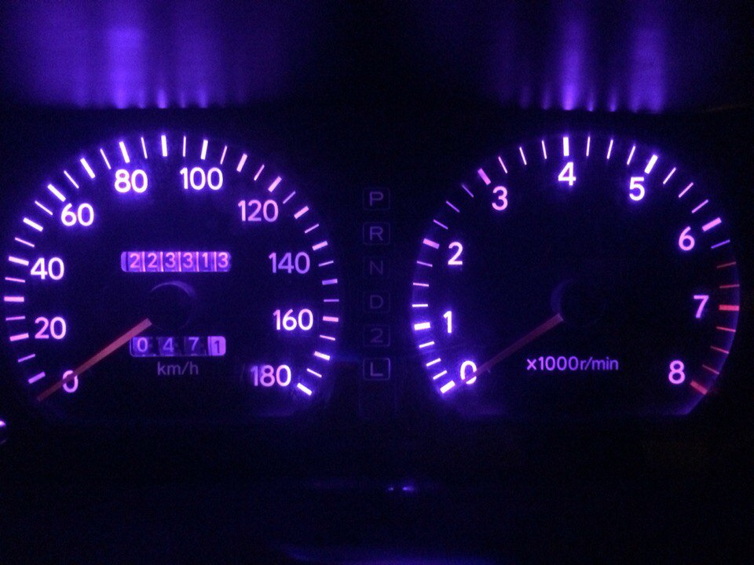
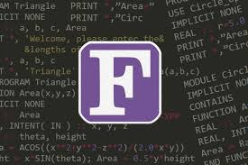

Fortran (Formula Translation) — первый коммерчески доступный язык программирования высокого уровня, разработанный командой IBM под руководством Джона Бэкуса в 1957 году.
Изначально создавался для научных и инженерных расчётов, что определило его математическую ориентированность и эффективность работы с массивами и матрицами.
Первый высокоуровневый язык программирования
Оптимизирован для математических вычислений
Миллионы строк legacy-кода
Команда IBM под руководством Джона Бэкуса начинает разработку языка, который должен был заменить трудоёмкое программирование на ассемблере для научных расчётов.
Первый компилятор Fortran выпущен для IBM 704. Компилятор создавал код, сравнимый по эффективности с ручным программированием на ассемблере.
Добавлена поддержка подпрограмм и функций, что сделало язык более модульным и удобным для создания больших программ.
Стандартизация языка. Убраны машинно-зависимые особенности, что позволило переносить программы между разными компьютерами.
Первый официальный стандарт ANSI. Установлены базовые конструкции языка, которые сохранились до наших дней.
Fortran 77, 90, 95, 2003, 2008, 2018. Каждая версия добавляла новые возможности: модули, ООП, параллельные вычисления, совместимость с C.
Оптимизирован для математических операций с массивами. Компиляторы генерируют исключительно эффективный машинный код.
Встроенная поддержка многомерных массивов и операций над ними целиком (array operations).
Поддержка чисел с произвольной точностью и комплексных чисел на уровне языка.
Обратная совместимость между версиями. Код 60-х годов может компилироваться современными компиляторами.
Встроенные конструкции для параллельных вычислений (Coarrays, DO CONCURRENT).
Миллионы строк проверенного кода сочетаются с современными возможностями (ООП, generics).
Климатическое моделирование и прогнозы
Квантовые расчёты и симуляции
Аэрокосмические расчёты NASA/ESA
Высокочастотный трейдинг
Расчёты прочности и CFD
Лучшая современная книга по Fortran 2008/2018. Подробное руководство с примерами.
Читать онлайн →Сообщество разработчиков Fortran с учебными материалами, примерами и FAQ.
Посетить сайт →GNU Fortran (gfortran), Intel Fortran, NAG Fortran. Бесплатные и коммерческие варианты.
Скачать gfortran →Оригинальная документация Fortran I, статьи Джона Бэкуса, исторический контекст.
Изучить историю →